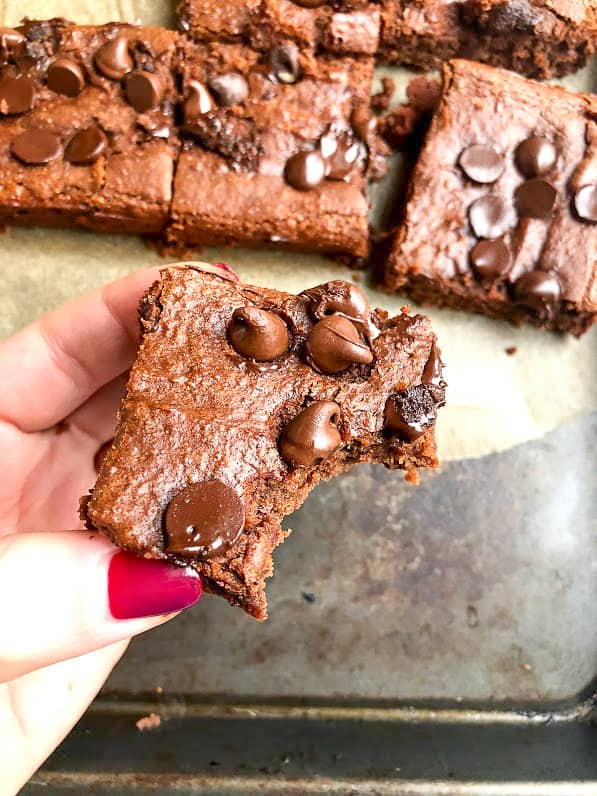

Chickpea Brownies

The most delicious vegan homemade brownies
- 15oz can chickpeas, drained and rinsed.
- /2 cup nut butter (I like almond or peanut)
- 1/2 cup maple syrup
- 1 Tbsp melted coconut oil
- 1 tsp. vanilla
- 1/4 cup almond flour
- 1/4 cup cocoa powder
- 1/4 tsp baking soda
- 1/4 tsp baking powder
- 1/4 tsp salt
- 1/2 cup chocolate chips and more for sprinkling on
Ingredients
- a food processor blend chickpeas,nut butter, maple syrup, coconut oil, and vanilla
- Once blended, add in almond flour, cocoa powder, baking soda, baking powder, and salt.
- Continue to process, scraping down sides as necessary until smooth.
- Once creamy and smooth, take off lid (I also remove blade) and stir in chocolate chips.
- Do not process the chips.
- Pour into greased 8×8 pan and sprinkle with extra chocolate chips if desired. ** see note for extra thickness
- Bake for 21-23 minutes.
Instructions
Preheat oven to 350F.